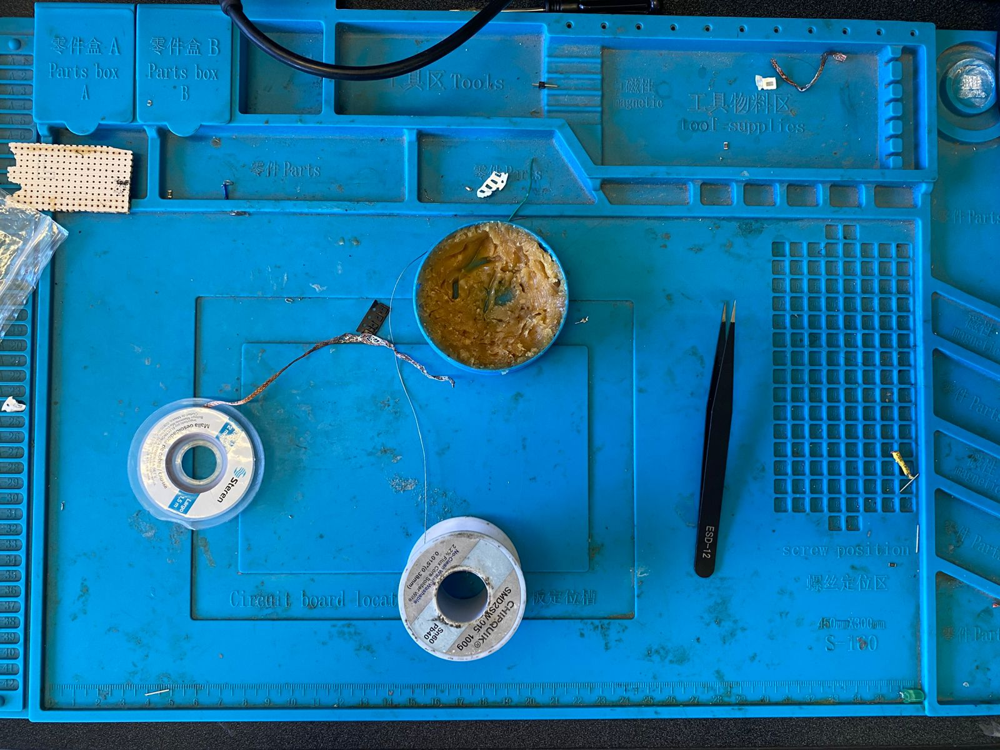
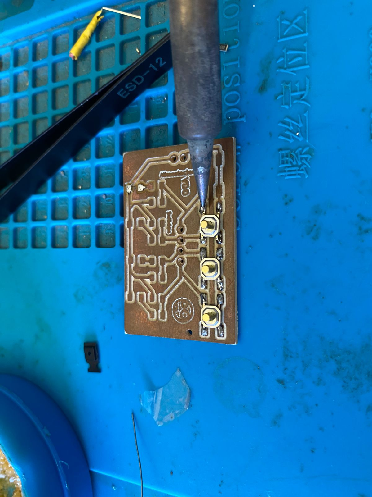
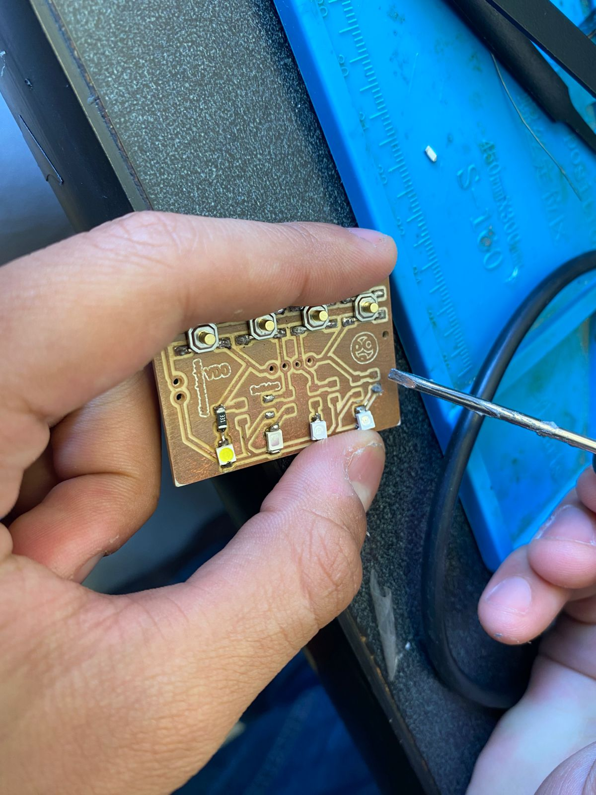
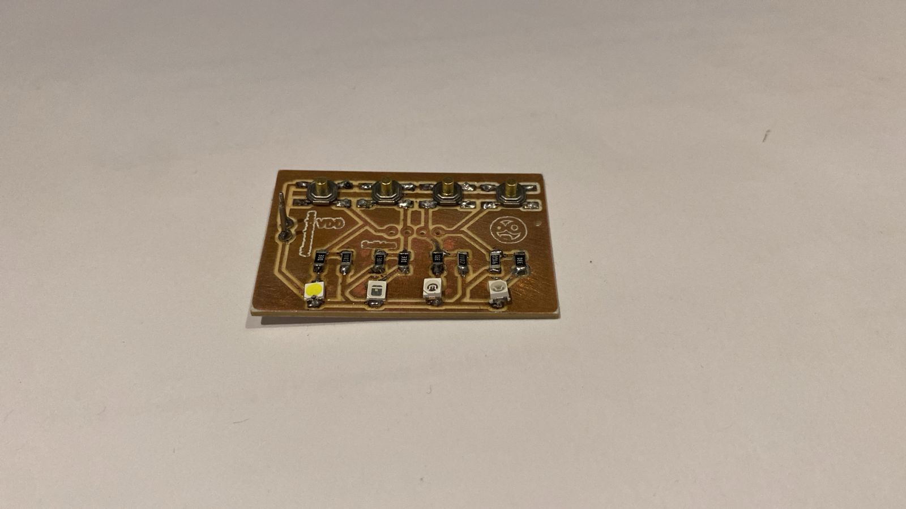
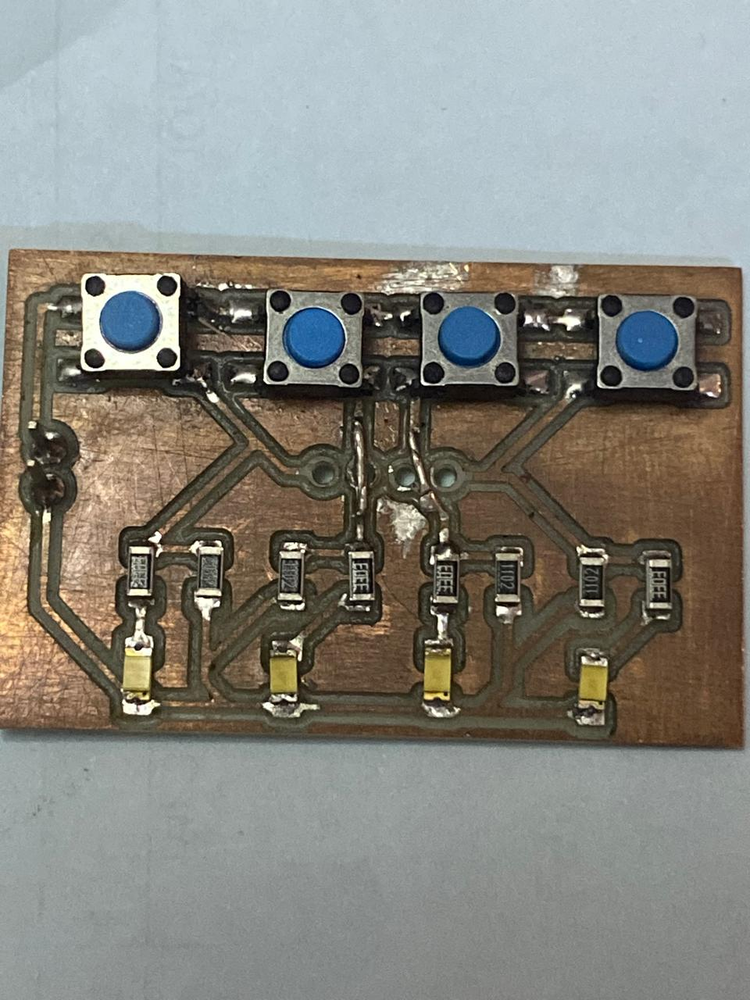

Práctica #4 - Soldadura
Nombre del proyecto: Soldadura y Ensamblaje de Componentes
Equipo: Sebastián Montaño y Juan Jacobo Flórez
Asignatura: Producción Electrónica
Fecha: 12/10/2025
Resumen
Esta práctica documenta el proceso de ensamblaje manual de una placa de circuito impreso estándar (PCB), aplicando las técnicas de soldadura para componentes de montaje superficial (SMD) y de inserción (Through-Hole). El objetivo fue desarrollar la destreza necesaria para realizar uniones de soldadura limpias, robustas y eléctricamente confiables.
Se empleó una técnica de anclaje para los SMD, un método de aplicación directa de pasta para componentes finos, y el método estándar de cono para THT. El resultado final fue un circuito completamente funcional, validando las técnicas de soldadura empleadas, la importancia de la inspección y la necesidad de técnicas de corrección.
Herramientas y Materiales
Control de Temperatura
Se ajustó el cautín a una temperatura de aproximadamente 340°C para la soldadura convencional con estaño en hilo. Para la soldadura con pasta, se utilizó una temperatura más alta (420°C) para lograr una fusión rápida sin sobrecalentar los componentes.
Materiales y equipo utilizado:
- Estación de soldadura: Regulable en temperatura, permite ajustar el calor específico según el tipo de soldadura.
- Limpiador de punta: Viruta de latón y esponja.
- Pinzas antiestáticas: De punta fina (rectas y curvas) para manipular componentes SMD muy pequeños.
- Estaño en hilo: Para soldadura estándar.
- Pasta de soldar:
- Flux adicional: En pasta mejora la fluidez del estaño y corrige uniones.
- Malla de desoldar: Trenza de cobre que absorbe el exceso de estaño por capilaridad.
- Alcohol isopropílico (90%+): Limpieza de residuos de flux y suciedad.
- Superficie de trabajo: Tapete antiestático (ESD mat) resistente al calor.
- 
Proceso de Soldadura: Componentes SMD
Para los componentes 1206, se implementó la técnica de anclaje.
Técnica de Anclaje
Este método convierte un problema de alineación (sostener el componente, el cautín y la soldadura simultáneamente) en dos pasos simples. Anclar un lado primero inmoviliza la pieza, permitiendo soldar el segundo terminal con total estabilidad.
- Aplicar una mínima cantidad de estaño a un solo pad.
- Sostener el componente con pinzas y recalentar ese pad para fijar un extremo.
- Con el componente ya inmovilizado, soldar el terminal restante.
- 
Soldadura con Pasta para Soldar
Para los componentes SMD más pequeños, se empleó pasta para soldar, que ofrece mejor control y uniformidad en espacios reducidos.
Se aplicó una cantidad mínima directamente sobre los pads de cobre, evitando puentes entre pads adyacentes.
- 
Espesor de la Pasta
La pasta debe formar una capa uniforme. Si es demasiada, puede causar cortocircuitos; si es muy poca, no habrá unión sólida.
Con la pasta aplicada, se colocó el componente con pinzas y se aplicó calor con un cautín a 420°C.
Tras la solidificación, se limpió el residuo de flux con alcohol isopropílico.
Ventajas y Limitaciones
La pasta para soldar es excelente para componentes pequeños y espaciados muy cerca, pero requiere mayor precisión en la aplicación. No es recomendable para soldaduras en cables.
Proceso de Soldadura: Componentes Through-Hole (THT)
El objetivo principal fue asegurar la perpendicularidad de los pines respecto a la placa.
Se insertaron las tiras de pines, soldando un único pin en cada extremo para fijar la orientación, y luego el resto aplicando calor tanto al pad como al pin.
La Unión Perfecta en Forma de Cono
Una soldadura THT correcta presenta una forma cóncava, similar a un pequeño volcán. Indica una conexión mecánica y eléctrica confiable.
Técnicas de Corrección y Desoldadura
El ensamblaje manual rara vez es perfecto en el primer intento. En esta práctica, se aplicaron tres técnicas de corrección principales:
1. Corrección de Soldaduras Frías
Problema: Uniones opacas o quebradizas por fusión incompleta (especialmente con pasta). Corrección: Aplicar flux fresco, recalentar con cautín (420°C) hasta que la soldadura fluya y adquiera brillo.
2. Remoción de Exceso de Soldadura
Problema: Puentes de estaño o uniones inestables (“bola”). Corrección: Aplicar flux, colocar malla sobre la unión, calentar con cautín limpio hasta que el estaño sea absorbido.
3. Reparación de Pistas Rotas
Problema: Pistas de cobre levantadas o quebradas por calor o manipulación. Corrección: Usar cable fino para crear un puente directo entre los pads correspondientes, restaurando la continuidad eléctrica.
ACLARACION
Es mejor no recurrir la mala practica de arreglar pistas rotas, en todo caso volver a fabricar si se cuenta con el tiempo es preferible.
Inspección y Resultados Finales
Tras completar las soldaduras, se limpió la placa con alcohol isopropílico.
La Importancia de la Limpieza
El flux residual es ácido y puede ser corrosivo o crear caminos conductivos con el tiempo. Limpiar es esencial tanto por estética como por confiabilidad eléctrica.
Pruebas de Continuidad y Validación
La inspección visual y las pruebas con multímetro confirmaron la funcionalidad general, aunque se requirieron correcciones menores.
Resultados de resistencia:
- Líneas de señal: 11 kΩ (valor esperado: 1 kΩ — discrepancia sin impacto funcional)
- Positivo de LEDs: 330 Ω (valor correcto)
- 
- 
El circuito final resultó operacional y funcional tras las correcciones aplicadas.